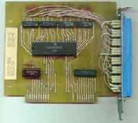
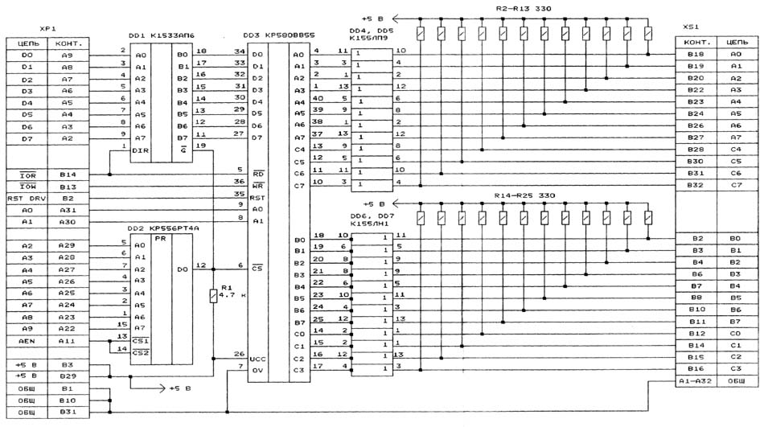

Интерфейсная плата ISA цифрового ввода-вывода данных

Устройство предназначено для организации цифрового ввода-вывода данных в персональный компьютер с разъемами расширения ISA. Устройство имеет 12 линий ввода и 12 линий вывода.
Схема электрическая принципиальная:

Описание:
Основой устройства является микросхема DD3 КР580ВВ55А. Для буферизации шины ISA используется восьмиканальный двунаправленный формирователь с тремя состояниями DD1 - К1533АП6. Дешифрация адреса осуществляется микросхемой ПЗУ КР556РТ4А [5] (DD2). Распределение адресов: канал A - 300H, канал B - 301H, канал C - 302H, регистр управляющего слова - 303H. При необходимости распределение адресов может быть изменено заменой микросхемы DD2. Для увеличения количества линий ввода-вывода в компьютере могут использоваться несколько плат с разным распределением адресов. Микросхемы DD4, DD5 (К155ЛП9) и DD6, DD7 (К155ЛН1) и резисторы R2 - R25 (330 - 680 Ом) служат для повышения нагрузочной способности и помехозащищенности линий ввода-вывода. Для программирования микросхемы ПЗУ может быть использован аппаратный программатор [2]. Для вышеуказанного распределения адресов каналов все ячейки микросхемы ПЗУ, кроме ячейки с адресом C0H, программируются в логическую единицу. Для ячейки с адресом C0H (11000000 в двоичной системе счисления) биты данных D1 - D3 программируются в логическую единицу, значение бита D0 должно остаться равным логическому нулю.
Системная шина ISA
| Контакт | Цепь | Назначение | Контакт | Цепь | Назначение |
| A1 | -I/O CH CK | Проверка канала ввода-вывода (ВВ). Информирование об ошибке, обнаруженной контролем по четности |
B1 | Земля | Общий провод питания |
| A2 | D7 | Старший разряд двусторонней шины данных. | B2 | RESET DRV | Инициирование сброса. Сброс или установка в исходное состояние системной логики при включении питания или при аварийном питании. |
| A3 | D6 | Разряд двусторонней шины данных. | B3 | +5 В | Провод питания напряжением +5 вольт |
| A4 | D5 | Разряд двусторонней шины данных. | B4 | IRQ2 | Линия запроса прерывания (высший приоритет). |
| A5 | D4 | Разряд двусторонней шины данных. | B5 | -5 В | Провод питания напряжением -5 вольт. |
| A6 | D3 | Разряд двусторонней шины данных. | B6 | DRQ2 | Запрос прямого доступа к памяти (ПДП). |
| A7 | D2 | Разряд двусторонней шины данных. | B7 | -12 В | Провод питания напряжением -12 вольт. |
| A8 | D1 | Разряд двусторонней шины данных. | B8 | 0WS | Проведение цикла обмена без вставки такта ожидания. |
| A9 | D0 | Младший разряд двусторонней шины данных. | B9 | +12 В | Провод питания напряжением +12 вольт. |
| A10 | -I/O CH RDY | Готовность канала ВВ. Инициирование периодов ожидания для работы с медленными устройствами. |
B10 | Земля | Общий провод питания. |
| A11 | AEN | Разрешение адреса. Служит для блокировки логики
декодирования порта ВВ во время цикла прямого доступа к памяти. |
B11 | -MEMW | Сигнал записи в память. |
| A12 | A19 | Старший разряд адресов памяти и ВВ. | B12 | -MEMR | Сигнал чтения из памяти. |
| A13 | A18 | Разряд адресов памяти и ВВ. | B13 | -IOW | Сигнал записи в порт ВВ. |
| A14 | A17 | Разряд адресов памяти и ВВ. | B14 | -IOR | Сигнал чтения из порта ВВ. |
| A15 | A16 | Разряд адресов памяти и ВВ. | B15 | -DACK3 | Сигнал подтверждения запроса ПДП. |
| A16 | A15 | Разряд адресов памяти и ВВ. | B16 | DRQ3 | Запрос ПДП. |
| A17 | A14 | Разряд адресов памяти и ВВ. | B17 | -DACK1 | Сигнал подтверждения запроса ПДП. |
| A18 | A13 | Разряд адресов памяти и ВВ. | B18 | DRQ1 | Запрос ПДП. |
| A19 | A12 | Разряд адресов памяти и ВВ. | B19 | -DACK0 | Сигнал подтверждения запроса ПДП. |
| A20 | A11 | Разряд адресов памяти и ВВ. | B20 | CLOCK | Сигнал системного тактового генератора. |
| A21 | A10 | Разряд адресов памяти и ВВ. | B21 | IRQ7 | Линия запроса прерывания (низший приоритет). |
| A22 | A9 | Разряд адресов памяти и ВВ. | B22 | IRQ6 | Линия запроса прерывания. |
| A23 | A8 | Разряд адресов памяти и ВВ. | B23 | IRQ5 | Линия запроса прерывания. |
| A24 | A7 | Разряд адресов памяти и ВВ. | B24 | IRQ4 | Линия запроса прерывания. |
| A25 | A6 | Разряд адресов памяти и ВВ. | B25 | IRQ3 | Линия запроса прерывания. |
| A26 | A5 | Разряд адресов памяти и ВВ. | B26 | -DACK2 | Сигнал подтверждения запроса ПДП. |
| A27 | A4 | Разряд адресов памяти и ВВ. | B27 | T/C | Сигнал окончания блока данных, передаваемых по каналу ПДП. |
| A28 | A3 | Разряд адресов памяти и ВВ. | B28 | ALE | Разрешение регистра адреса. |
| A29 | A2 | Разряд адресов памяти и ВВ. | B29 | +5 В | Провод питания напряжением +5 вольт. |
| A30 | A1 | Разряд адресов памяти и ВВ. | B30 | OSC | Высокочастотный системный синхросигнал. |
| A31 | A0 | Младший разряд адресов памяти и ВВ. | B31 | Земля | Общий провод питания. |
Ссылки:
28.01.2004
28.09.2006
21.06.2010
Альтернативные источники
энергии
Компьютеры и
Интернет
Магнитные поля
Механотронные системы
Перспективные
разработки
Электроника и технология